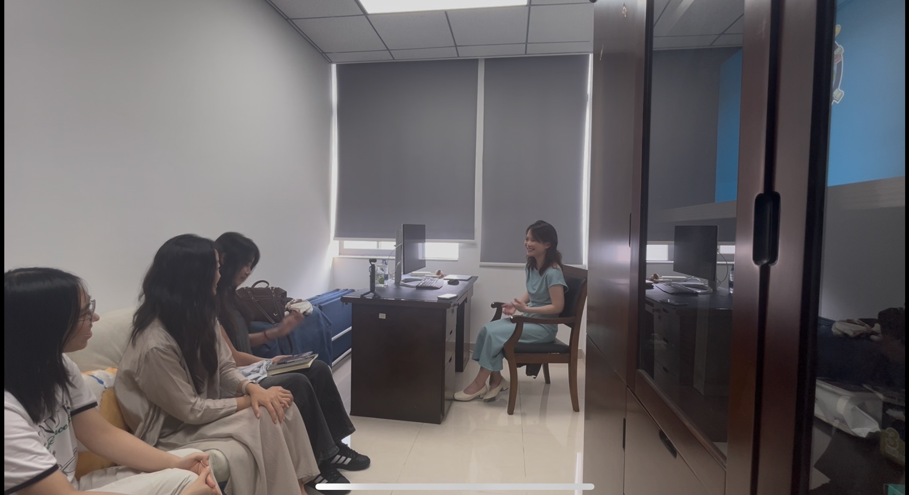
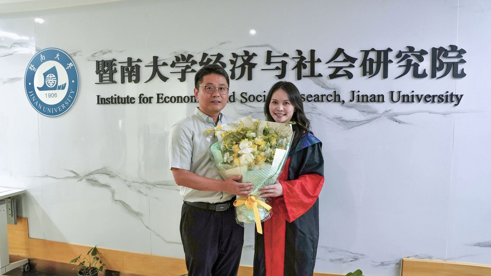
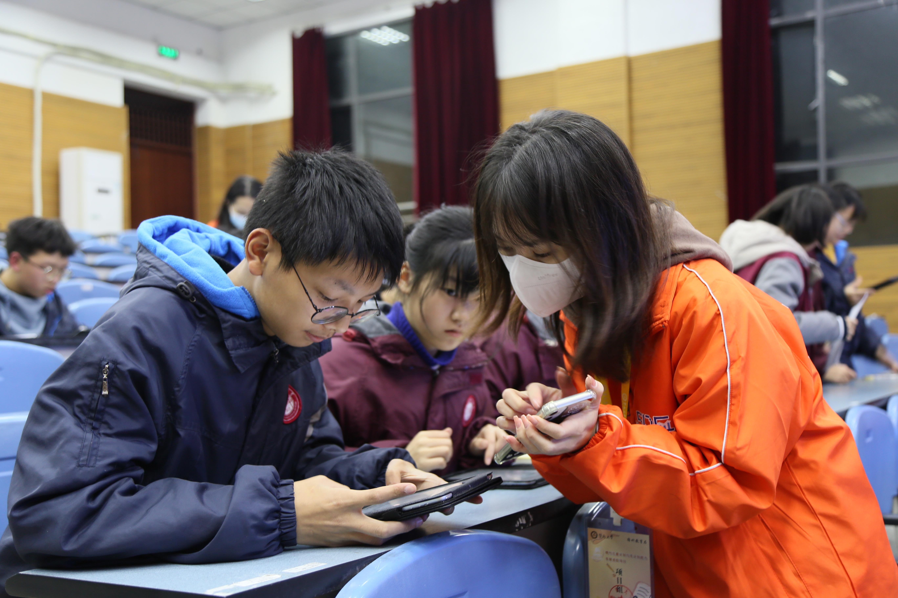
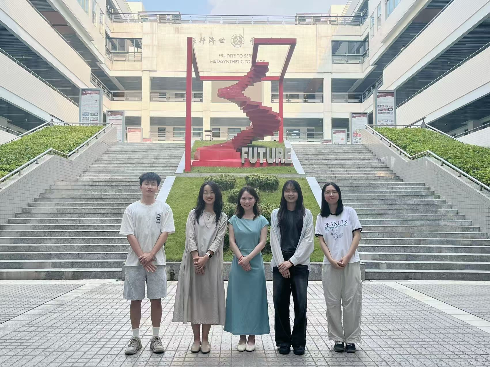
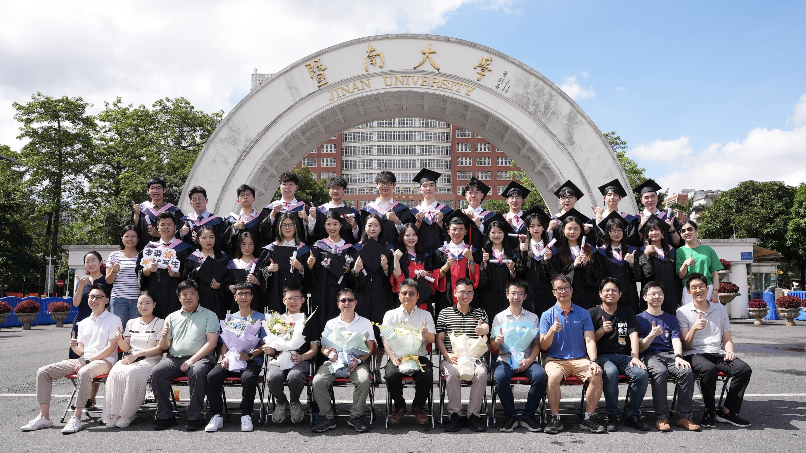

寻访校友 ｜ 第二期
一九零六寻根 · 暨南薪火相传
弦歌不辍传薪火
桃李春风又一程
——专访吴冰蓝校友
吴冰蓝 2024届博士校友
华南师范大学经济与管理学院教师
为迎接暨南大学建校120周年，深入推进“一九零六寻根·暨南薪火相传”主题实践活动，经济与社会研究院组织师生专访2024届博士校友吴冰蓝。回望暨南岁月，她在一字一句中懂得严谨，在一稿一改中磨砺心性，也在走上讲台后，把所学所感带进课堂。她的故事，是一名青年学者的成长，也是“忠信笃敬”在传承中的真切回响。

访谈现场
01 治学 · 严谨
从一字一句里，
读懂治学的分量
吴冰蓝与暨南的缘分，始于博士求学。来到经济与社会研究院后，她跟随冯帅章院长开展学习与研究，也在韩昱洁等老师的指导下推进论文写作。
回望那段时光，吴冰蓝笑言，读博并没有外界想象中那般“可怕”。组会频率高，研究有人带，遇到问题也总有人及时回应，同门之间彼此陪伴，许多原本可能令人焦虑的时刻，也因此变得从容许多。她常说，自己在读博期间“一直被老师们托举”。这种托举，不是替她把路走完，而是在关键处点拨方向，在一次次讨论与修改中，教她怎样把路走稳、把学问做实。
真正让吴冰蓝体会到“治学”二字分量的，是一次论文返修。那天下午，冯老师坐下来帮她改稿，从结构到表达，一处一处往下推，一个字一个字地看。哪里论证还不够扎实，哪里表述还不够准确，都要重新琢磨。时间从下午走到晚上，修改却没有停。
多年以后再回想，她记住的早已不只是那篇论文，而是老师面对学术时不肯含糊的认真。所谓严谨，也正是在一次次这样的修改中，渐渐成为她做学问的习惯。

吴冰蓝和导师冯帅章
02 求索 · 耐心
在一稿一改间，
走过求索的长路
做研究久了，吴冰蓝也越来越明白：求索路长，贵在耐心。博士期间，她依托学院绵竹追踪调查数据，关注儿童时间偏好及其对未来成长的影响。一个问题提出之后，要找数据、做分析、反复验证，再把结果写成论文。研究就在这样的往复中一点点向前，而真正考验耐心的，往往还在投稿之后。
吴冰蓝和老师合作的一篇论文，最初投过中文期刊，并没有得到理想的结果。后来改成英文，重新投稿，又经历多轮修改和等待。前前后后磨了一年多，到最后，她和韩老师甚至都有些“不想再打开这篇论文”。可文章还是一次次被重新打开，一处一处重写，一轮一轮打磨，最终发表于CER。
回望这段经历，她说得很平静：“投稿有自己的过程，平常心走下去就好。文章改了一轮又一轮，也会一点点变得更好。要坚信，文章总会找到自己的去处。”
对吴冰蓝而言，坚持并不是守着最初的想法不放，而是在一次次退回和修改之后，仍愿意重新审视自己的研究。稿件在改，思路越理越清；文字在磨，研究也愈发完整。山重水复时，不急着否定来路；一稿一改间，自有新的方向。
如今，她仍在儿童发展这一方向继续探索，也开始把目光投向大学生就业等现实议题。从一个问题走向另一个问题，变的是研究的对象，不变的是对真实世界的关切。

吴冰蓝参加绵竹追踪调查
03 传承 · 育人
在一方讲台上，
续写新的篇章
毕业之后，吴冰蓝进入华南师范大学经济与管理学院任教。从博士生到高校教师，最明显的变化，是很多事情开始要由自己作出判断。过去做研究，导师会帮着把握方向；如今，从选题推进到教学安排，都要自己一步步拿主意。她把这种变化概括得很直接：“最大的转变，就是自己要对自己负责。”
但毕业并没有切断她与暨南的联系。工作之后，她仍会回到暨南参加导师的组会，与老师保持学术交流，只是身份慢慢从学生走向合作者。离开校园后，她开始真正独立，也更懂得当年老师一路引领的分量。
走上讲台后，吴冰蓝也开始适应另一种身份。第一次正式上课，是一个周一的上午。课前，她有些紧张；真正开讲以后，反而渐渐放松下来。讲的是自己熟悉的劳动经济学，准备得足够充分，学生也听得认真，一堂课就这样顺了下来。
后来，她越来越体会到，讲好一门课，不只是把知识讲完，更重要的是让学生愿意听、听得进，也能从中看到更远的地方。于是，她会把新的论文和现实议题带进课堂。多年以前，她曾在IESR的课堂里，从一篇篇前沿文献中拓展视野；如今，这种对现实与前沿的关注，也自然成为了她课堂的一部分。
从一字一句的推敲，到一稿一改的坚持，再到一方讲台上的重新出发，吴冰蓝走过的，是一名青年学者成长的三程，也是教育最美好的传承。于她而言，“忠信笃敬”是忠于家国，信于治学，笃于求索，敬于所业。落到日常，便是论文里的严谨、研究中的耐心、讲台上的认真，也是吴冰蓝一路所行、一直所守。

吴冰蓝和访谈小队的合照
此次寻访既是一次对校友成长足迹的回望，也是对我院育人传统与暨南精神的再体悟。百廿暨南，薪火相传，薪火落处，是讲台上的弦歌相续，是实验室里的潜心求索，是世界舞台上的从容讲述，也是山海之间的躬身实践。暨南精神由此相承，逐梦脚步由此向远。
站在建校120周年的新起点上，回望百廿来路，更见前方辽阔。愿暨南弦歌不辍、薪火长传，也愿一代代暨南人承“忠信笃敬”之志，让薪火代代相承，继续向前、向远、在更辽阔处生生不息。

IESR学子毕业照
图文：访谈小队